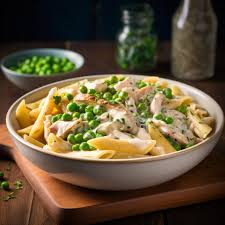

Chicken Pasta Recipe

Here I will guide you through how to make your own Chicken Pasta with garden peas.
Please note, sauce is optional.
This recipe remains plain to show the benefit of avoiding cheese, which is - as we all agree by reading this far - one of the nastiest creations in all of human history.
Ingredients
- Pasta (your choice of variant and how much you want)
- Chicken (however much you want)
- Garden peas (however much you want again, seriously, just go nuts and have a food coma)
- Water (this will depend on the size of your pan)
- A pan to cook all of this in
- Some common sense - come on guys, it's fucking plain chicken, pasta, and peas. This couldn't be a simpler recipe so why are you reading this?
Steps
- If the chicken is uncooked, cook it. Put it in a baking tray, set your oven to 180C, drizzle in olive oil (yes, olive oil, none of this vegetable oil shit), throw a bit of salt and pepper on there, and leave in the oven for 40-60 minutes
- Once the chicken is cooked, grab your pan and put your pasta in
- Fill the pan with cold water - yes cold, it cooks the pasta better, especially if you've decided upon using spaghetti!! - until the pasta is covered
- Cook on a high heat (on the hob) for approximately 10 minutes
- Add your garden peas
- Leave this to cook until boiling. Please note, you must not watch this process, due to the fact that a watched pot never boils
- Drain the water from the pan - using a sieve or collinder. I didn't add this to the ingredients list as I included common sense. If you don't know how to drain boiling water from a pan, you have much larger issues and should not be following a recipe guide on how to make plain Chicken, Pasta, and Peas
- Add your chicken to the pan - I am praying you have used some of that common sense to cut up the chicken first. If not, please just leave this website, and potentially the planet
- If you would like some sauce, now is the time to add it and then stir
- Transfer the contents of your pan to a bowl, or, simply eat out of the pan. We know you're going to anyway, because that's the type of person you are. You'd love nothing more than to have a pan of pasta, wrapped up in pyjamas and a blanket on the settee, two cats sleeping around you, and your loving husband rubbing your feet. So go on, eat out of the pan
Home